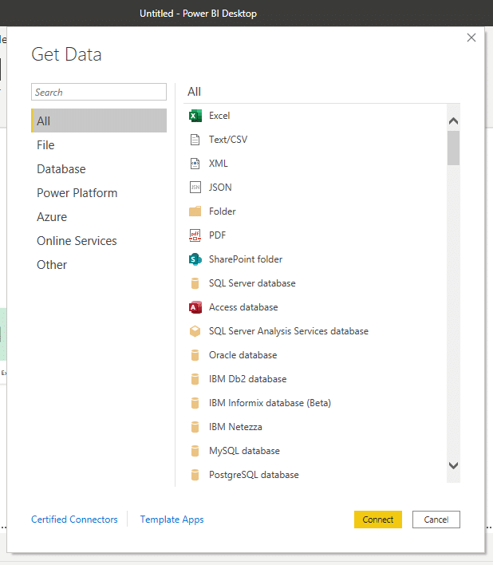
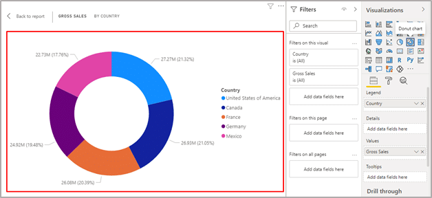

In this blog, we will discuss everything that you need to know about Power BI. In today’s fast paced world, we all understand the importance of data analysis for any business, to explore and filter it in a meaningful way. Moreover, Data analysis is important for many different reasons like:
Gartner has recognized Microsoft as a Magic Quadrant Leader in analytics and business intelligence platforms for 13 consecutive year. Power BI is a powerful business intelligence and Data Visualization tool by Microsoft of Power Platform family. In addition to Power BI, other components of Microsoft Power Platform are Power Apps, Power Automate, and Power Virtual Agents. Power BI is a collection of cloud-based services, apps and connectors that work together to manage and analyse data from various data sources. Power BI is a great analytical tool that lets you dive deeper into your data by slicing, filtering, and drilling down to get insights hidden into your data. It is a unified, user-friendly and scalable platform that can visualize any data to get insights for self-service and enterprise business intelligence. Power BI lets you to analyze data and drive your business outcome through visually immersive and interactive way by graph and charts. It lets you share and publish relevant data through reports and dashboards with anyone or everyone you want. As with all other Power Platform components, Power BI provides seamless integration to various cloud-based, or on-premises data sources and more than hundreds of other underlying data platform using library of connectors.
Power BI features several elements that all work together and you can plan to choose any as per your budget, requirement or that fits your role most effectively.
Let’s have a quick overview of different elements of Power BI
It is a free application that you can download and install to your local computer. It connects to different data sources and combine them to create a data model.
This data model helps you to create interactive and impressive visuals that you can share as dashboards and reports within your website, Teams, SharePoint and many other apps within your organization.
Available views in Power BI Desktop are:
It is Software as a Service (SaaS) part of Power BI. It is sometimes also referred to as Power BI online. Once you build a report in Power BI Desktop, you can publish it on Power BI service, for the end-users to view the information and act upon it.
You can also straight away create reports in the Power BI service and publish it for the end users to view and interact with them.
Power BI offers a set of mobile apps for Android, iOS and Windows 10 devices. In addition, all the reports and dashboard that you create on Power BI Desktop or Power BI service are available in the Power BI mobile apps. Mobile apps enable users to get secure access to real-time dashboards and reports.
It is used to author paginated reports that you create with your data and then publish it in the Power BI Service to share it with everyone.
It provides data visualizations that includes maps, charts, gauges, sparklines, indicators and data bars to provide new insights that can not be achieved with standard charts and tables.
You can create report from variety of data sources like SQL Server and Analysis Services, Oracle, Power BI datasets and other databases.
It is an on-premises reporting solution to give your users access to rich, interactive reports and capabilities of SQL Server reporting services.
As it is included in the Power BI premium, it gives you the flexibility to create reports on Power BI Desktop and move it to the cloud whenever there is a requirement.
Users can view and access all the reports and KPIs in a secure web portal of Power BI Report server. Power BI Report Server is available through two different licenses: Power BI premium and SQL Server Enterprise Edition with Software Assurance.
The major building blocks of Power BI are:
All are created on capacities and organized into workspaces.
Visualization helps to turn the granular and complex data into interactive, useful, easily understood and visually compelling business information. For instance, it brings your data to life through interactive reports, charts, graph, and other visual representation and gives powerful business insights effectively and quickly.
The different types of visualizations that can be added to Power BI are:
Dataset is a collection of data that is used for visual representation of data in Power BI. It is automatically created when you use Get Data in Power BI to connect or import data to create visuals, dashboards or reports in Power BI.
It is possible to connect to and import data from different data sources like content pack, file or even a live data source. A dataset contains all the information about the data source and the data-source credentials.
A dataset can represent a connection to models developed in Power BI Desktop and also to a live connection by an external-hosted Analysis models like SQL Server Analysis Services and Azure Analysis Services.
A Power BI report represents multi-perspective view into a dataset through visuals. A report can have a single visual or pages full of visuals. It helps you to find insights from the datasets. Reports in Power BI are based on a single dataset.
The visuals shown in the Power BI reports are not static and it changes as the underlying data is updated. A report is highly customizable and highly interactive.
Moreover, it gives you the freedom to explore your content by slicing, filtering, and highlighting your visuals without modifying the underlying datasets or the original shared content.
Unlike reports that can show visuals on a single page or multiple pages, dashboard is restricted to only one page. It is also often called as canvas. However, it is a feature exclusive to Power BI service only.
Dashboard is not available in Power BI Desktop. The visualizations shown on the dashboard are called tiles. The visualization represented on the dashboard comes from the report, and each report is based on a dataset.
The visualization on a dashboard can come from single underlying report or many, and from one underlying dataset or many. Dashboard is a great way to give a quick glance of all your important metrics and monitor your business.
Power BI comes with three pricing plans – Desktop, Pro and Premium. The Power BI Desktop is free to use and can be downloaded and installed on a local computer. Using Power BI Desktop, you can create report, model and create data visualization.
Power BI Pro costs $9.99 monthly per user that includes building dashboard, data governance, data collaboration, also the ability to publish reports anywhere. Power BI Premium is priced at $4,995 monthly and provides dedicated cloud compute and storage resources.
However, Premium plan allows any user to consume Power BI content with advanced administration and deployment controls.
Power BI is a great analytical tool that integrates seamlessly with your existing applications to analyze and share insights from data.
Power BI lets you create interactive and stunning dashboard that can be customized as per your business requirement.
Power BI Desktop is free of cost and you can start creating report to analyze with different visualization by connecting to different data sources.
As with all other Microsoft products, Power BI is very safe to use. As it is built on Azure which is a cloud computing infrastructure and platform by Microsoft. Power BI service uses Azure Active Directory (AAD) for authentication of users.
Power BI is a low code analytical tool. You can create stunning visuals, analyze data and share insights without any experience in coding. Above all, being a low-code platform, it empowers everyone to build dashboards and create reports using different visualizations.
This data model helps you to create interactive and impressive visuals that you can share as dashboards and reports within your website, Teams, SharePoint and many other apps within your organization.